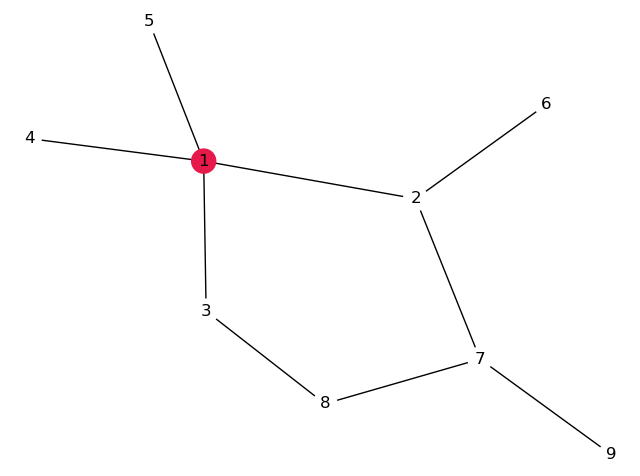
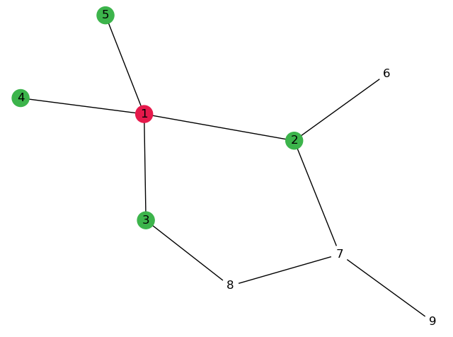
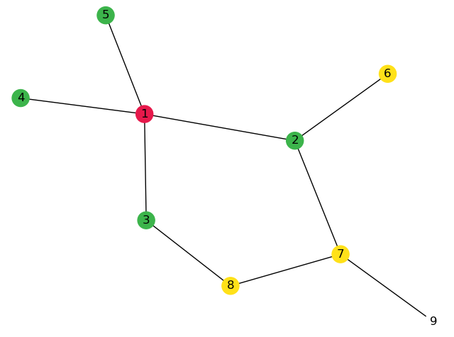
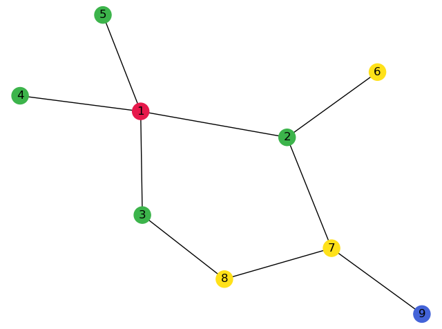

Options Type of Graph Static graph Dynamic graph Example graphs None Cycle Star Path Tree Complete graph Bipartite graph Hypercubes Petersen graph Custom Number of nodes Algorithm None Breath-First Search Depth-First Search Dijkstra's algorithm Kruskal's algorithm Cycle Detection Compile    